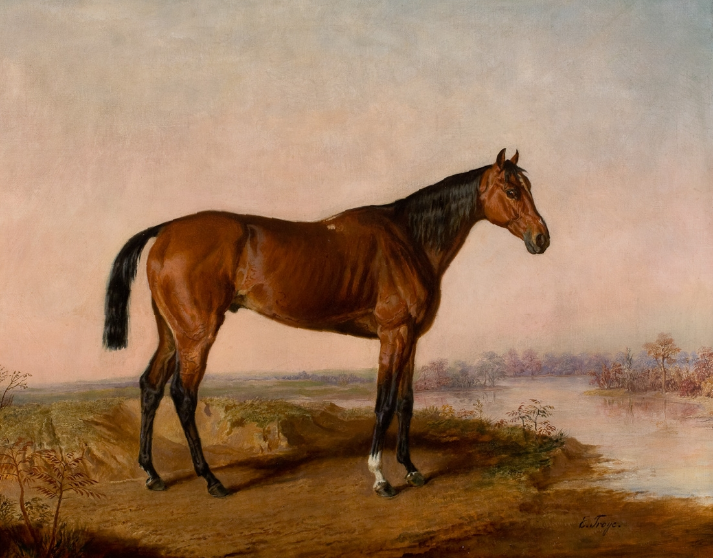

Kentucky, the "Bluegrass State," has a rich history shaped by Native American heritage, Abraham Lincoln, and its role in the Civil War. The state's cultural traditions, from bluegrass music to the Kentucky Derby, are celebrated through landmarks, museums, and festivals that reflect its heritage.
Kentucky’s natural beauty is unmatched, with landscapes ranging from the Bluegrass region to Mammoth Cave National Park, the longest cave system in the world. Outdoor enthusiasts can enjoy hiking, fishing, and horseback riding amidst scenic forests, lakes, and rivers.
The state is renowned for its bourbon production, the Kentucky Derby, and its agricultural heritage. Kentucky's fertile soil supports a strong farming community, while its world-famous horses and spirits continue to define the state's identity.
Kentucky Fried Chicken, or KFC, is one of the world's most iconic fast-food brands, and it all started in the Bluegrass State. Founded in 1930 by Harland "Colonel" Sanders in Corbin, Kentucky, KFC grew from Sanders' perfected blend of 11 herbs and spices for fried chicken. As the business expanded through franchising, KFC's Kentucky origins and distinctive flavor became a source of state pride. Though now a global operation, KFC's foundations remain firmly planted in the entrepreneurial spirit and culinary traditions of its Kentucky birthplace.
Kentucky Fried Chicken, or KFC, is one of the world's most iconic fast-food brands, and it all started in the Bluegrass State. Founded in 1930 by Harland "Colonel" Sanders in Corbin, Kentucky, KFC grew from Sanders' perfected blend of 11 herbs and spices for fried chicken. As the business expanded through franchising, KFC's Kentucky origins and distinctive flavor became a source of state pride. Though now a global operation, KFC's foundations remain firmly planted in the entrepreneurial spirit and culinary traditions of its Kentucky birthplace.
Kentucky Fried Chicken, or KFC, is one of the world's most iconic fast-food brands, and it all started in the Bluegrass State. Founded in 1930 by Harland "Colonel" Sanders in Corbin, Kentucky, KFC grew from Sanders' perfected blend of 11 herbs and spices for fried chicken. As the business expanded through franchising, KFC's Kentucky origins and distinctive flavor became a source of state pride. Though now a global operation, KFC's foundations remain firmly planted in the entrepreneurial spirit and culinary traditions of its Kentucky birthplace.
JIF peanut butter is an iconic American brand with deep Kentucky roots. The story began in 1929 when Procter & Gamble opened a production facility in Lexington, Kentucky, developing the smooth, creamy peanut butter recipe that would become JIF. As the product gained nationwide popularity, JIF became synonymous with high-quality peanut butter, still manufactured in Kentucky to this day. Drawing on the state's agricultural heritage and skilled workforce, the JIF brand's origins in the Bluegrass State remain central to its enduring appeal, even as it is enjoyed by consumers worldwide.